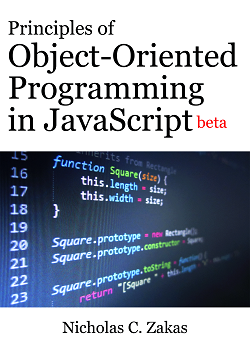

Now available: Principles of Object-Oriented Programming in JavaScript (beta)
Ever since I put together my Principles of Object-Oriented Programming in JavaScript class, I’ve been wanting to put together a resource that people who took the class could take home with them. I go through a lot of topics in the class and I didn’t think the slides would be enough to help people remember what was discussed. I thought about adding notes into the presentation, but that didn’t quite seem right either. After some thinking, I came to the conclusion that a book on the topics would be the best way to go. Kate Matsudaira made a compelling argument that I should start with an ebook and so here we are: Principles of Object-Oriented Programming in JavaScript.
This is the first time I’ve attempted to publish something by myself (other than the posts on my blog), and so I am still learning about the finer points of self-publishing. For example, this is the first time I’ve had to make legible diagrams. It may seem like a minor point but when you’re used to sketching things out with a pen and handing them to somebody to make a pretty diagram, it takes a little bit of adjusting. But then again, this is an entirely new experience with all kinds of new opportunities.
The book itself is intended to be focused on object-oriented programming in JavaScript. Specifically, how you create and modify objects. If you ever wanted to know why objects behave in certain ways or how inheritance really works, I’m hoping that this book answers those questions. Object-oriented programming is about more than inheritance and I’m hoping this book is considered a nice, concise guide to how objects work in JavaScript.
Because I’m focusing on JavaScript itself and not necessarily on the browser or Node.js, the book works as a learning tool regardless of where you’re writing JavaScript. The same basic concepts apply regardless of the JavaScript environment that you’re working in. There is no discussion of the DOM, or CommonJS modules, or anything other than pure ECMAScript 5 (and a few mentions of ECMAScript 6 for context).
The book is available in three ebook formats: PDF, Mobi, and ePub.
Why Leanpub?
The book is published through Leanpub. In researching options for ebook development, I found a lot of different solutions. Many of them required some hands-on work in order to generate the three formats that all ebooks need to reach the largest audience: PDF, Mobi, and ePub. I was looking for a solution that would generate the three formats automatically without me needing to do anything special.
I was also looking for a solution that would allow me to write the book in markdown. In the past year I’ve transitioned to writing everything in markdown and converting it into the appropriate formats afterward. This has greatly sped up my writing as I worry less about formatting and more about the content.
That I had to worry about how to sell the book. Should I open up a web store? What forms of payment will I accept? This is the part where I got stuck.
I believe it was Cody Lindley who first suggested that I take a look at Leanpub. After about 5 minutes, I was convinced that this was the right solution for me. Leanpub not only generates all three formats directly from markdown, but they also setup a nice-looking page where people can learn more about the book and purchase it.
Another area of concern for me was the ability to update the ebook whenever I wanted. When dealing with print books, I’ve always been frustrated at how long it takes to get fixes into the book. With ebooks, the process should be much faster, however how do you manage that process? Leanpub does that for you. I can just update the book when I’m ready and everyone will get notified that there is a new version. That means I can make fixes or even add new content and everyone who already purchased the ebook will be notified and able to download a new copy quickly.
You can shape this book
Leanpub has a theory about ebooks that I really like: you should release content early and often, gathering feedback from readers, and keep doing that until the book is in good enough shape to be considered final. While this makes a ton of sense for novels, where you can release a chapter each week, I felt like a technical book must be mostly complete before it’s ready to be shared with readers.
So that’s what I did, the ebook now contains all of the content I planned on writing. But that doesn’t have to be the end. If there are topics that seem like they are missing or things that aren’t being explained as well as they should be or places where a diagram would help, you can tell me that and I can fix it pretty quickly. Basically, as a reader of this ebook, you can shape what the final version of the book is going to contain.
You’ll notice that I have called this a beta version of the book. The content hasn’t been fully edited or tech edited yet, but I still want to share this with everyone to start getting feedback. At the moment, there are 90 pages that are jampacked with deep technical explanations of how JavaScript objects work. There could very well be more content that belongs in this book and I need you to tell me what that is. And as I said, once you purchase the ebook, you will get all future updates as well. I’m hoping that means an errata page won’t be necessary because I’ll be constantly fixing issues as they arise.
I’m aiming to have the book out of beta by the end of February 2013. That doesn’t mean there won’t continue to be updates after that point, just that I will consider it mostly “done” except for ongoing fixes.
Pay what you want
Another thing that I like about Leanpub is the ability to let the customer say what they would like to pay for the ebook. Thanks to everyone who suggested a price, I ended up with a range of $15-20. Most of the 400 people who responded suggested a price within that range (some also went as high as $100, which is wow, a lot for an ebook). So what I decided to do is set the suggested price at $19.99. If you feel that is too much for the ebook, you can pay less. If you feel like you want to support this project, you can pay more. I love giving this flexibility to readers.
Submit feedback
Since I’m publishing this on my own, I’ve set up a mailing list to gather feedback. You can actually use the mailing list for feedback on any of my books, but this is the only way to submit feedback for the ebook. You can also let me know if you like how this project turned out or any suggestions for making it better. I’m really looking forward to hearing your feedback. If this works out, I may do more ebooks in the future.